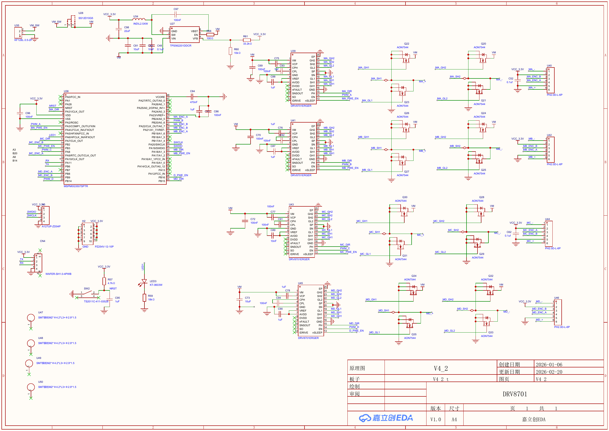
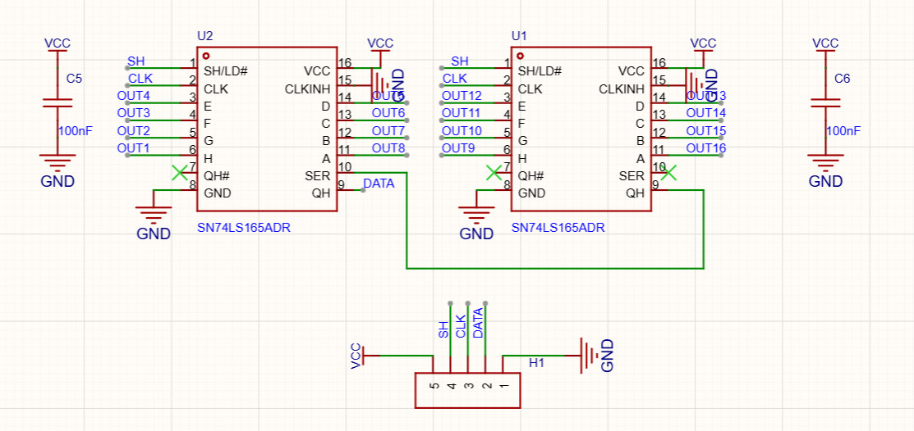
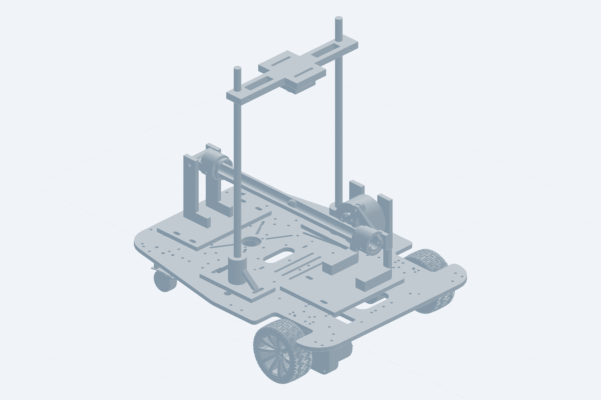

选择产品工作台
每种设备使用独立身份、控制协议和升级包。

01
四路闭环电机驱动
CM4M
Motor Control
A/B/C/D 四通道编码器、电机速度闭环、参数管理与单路自动整定。
- 四通道控制
- 速度 PI
- 自动整定
- UART 升级
打开电机驱动工作台→

02
灰度循迹小车底盘
CHAS
Gray Chassis
双轮差速、16 路灰度、ICM45686 航向、三串 PID 与角度环自动标定。
- 通道自选
- 灰度识别
- 航向标定
- UART 升级
打开底盘工作台→

03
视觉电机闭环
BBK230
Ball Beam
K230 钢球观测、QD4310 连杆角度控制、安全租约与有限 RL 回合采集。
- 视觉位置
- 闭环控制
- 轨迹验收
- 策略采集
打开滚球闭环工作台→